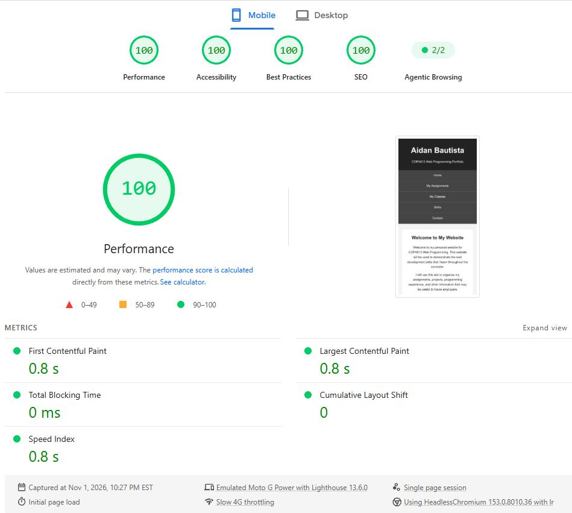
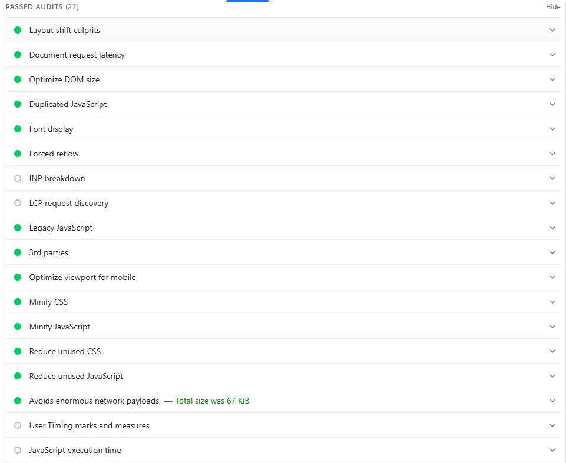
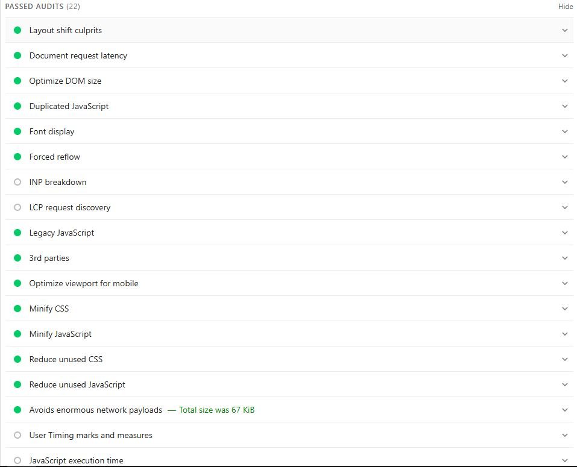
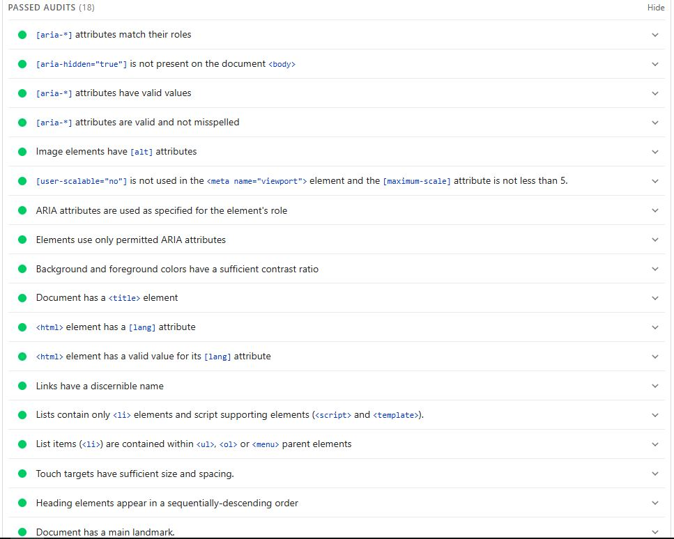
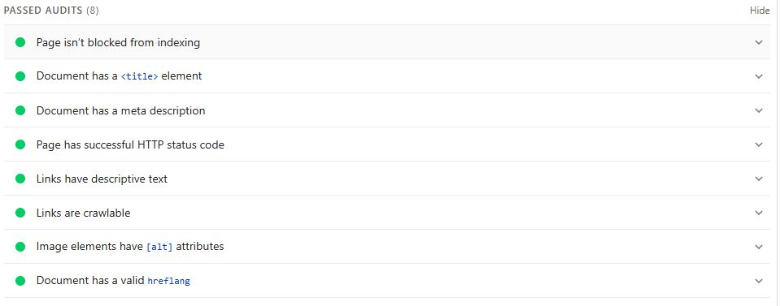

Purpose of the Audit
I tested my COP4813 portfolio website using Google Chrome DevTools and Lighthouse. The purpose was to evaluate mobile usability, performance, accessibility, SEO, and web development best practices.
Mobile Interface
The homepage uses responsive CSS so the content, navigation, and images can adapt to different screen sizes. I tested the layout using Chrome's Device Toolbar.
Website tested: View my homepage
Overall Lighthouse Results
Insert a screenshot of your actual overall Lighthouse scores below.

Performance
Score: [Enter your score]
Findings: [Describe the performance issues Lighthouse reported and any successful checks.]

Accessibility
Score: [Enter your score]
Findings: [Describe the accessibility issues and recommendations shown in your report.]

Best Practices
Score: [Enter your score]
Findings: [Describe the Best Practices issues reported.]

SEO
Score: [Enter your score]
Findings: [Describe the SEO issues and recommendations.]

Conclusion
Lighthouse helped me identify areas where my website can improve. Testing the page at a mobile screen size also helped me check that the navigation and content remain usable on smaller devices. The audit findings show which areas should be improved in future updates.